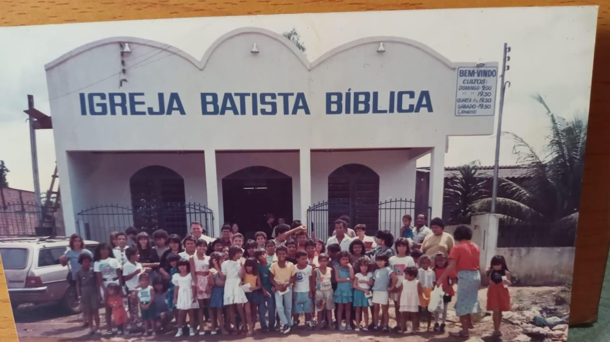
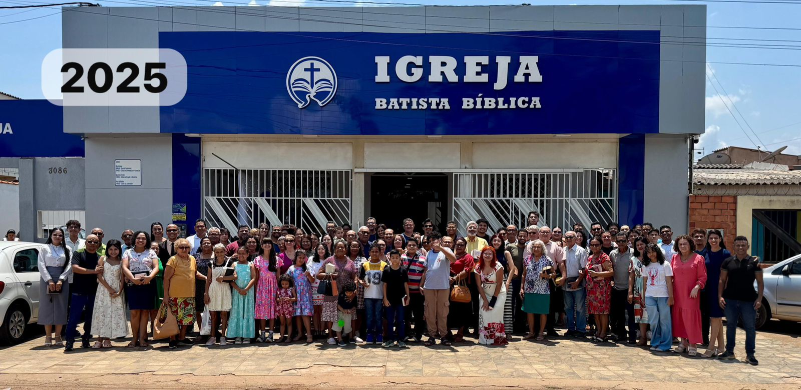
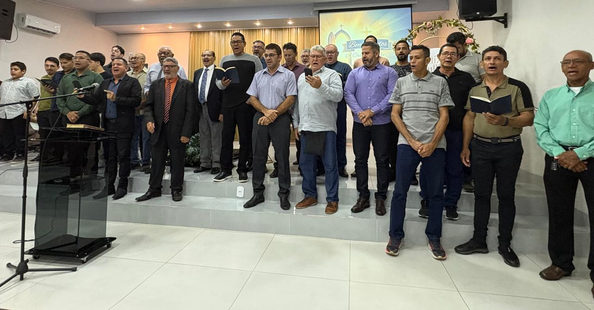

Igreja Batista Bíblica Nova Porto Velho
"Porque a palavra de Deus é viva e eficaz, e mais penetrante do que espada alguma de dois gumes, e penetra até à divisão da alma e do espírito." Hebreus 4:12 — ACF
Organizada em 1993, a Igreja Batista Bíblica Nova Porto Velho carrega mais de três décadas de fidelidade à Palavra de Deus em Porto Velho — RO. Ao longo desses anos, o Senhor tem sustentado esta congregação pelo poder imutável do Evangelho, sob a pregação expositiva e fiel das Sagradas Escrituras.
Sob a liderança pastoral do Pr. Adonias dos Anjos Ferreira, a igreja é regida pelos fundamentos bíblicos: a inerrância e suficiência das Escrituras como única regra de fé e prática. Reconhecemos a igreja como um corpo organizado sob a autoridade suprema de Jesus Cristo, preservando a autonomia da igreja local e a separação eclesiástica como salvaguardas da pureza doutrinária.
Nossa missão é clara: proclamar o Evangelho de Cristo com fidelidade, discipular cada crente no conhecimento das Escrituras, fortalecer as famílias no temor de Deus e avançar as missões dentro e além de Porto Velho — tudo para a glória exclusiva de Deus.

Quarta-feira
Sábado
Domingo — Manhã
Domingo — Noite
Registros da nossa caminhada — cultos, ministérios, eventos e momentos que marcam a história da IBBNPVH. Cada foto é um testemunho da graça de Deus em nossa congregação.


Veja mais fotos no nosso Instagram
@ibbnpvh no InstagramFormando jovens no caminho da Palavra
Ensinando os pequenos desde cedo
Fortalecendo a mulher bíblica
Edificando o homem segundo Deus
Vivências de fé em comunidade
Servindo ao próximo com amor
Encontros internos e externos
Endereço
Av. Guaporé, 3086
Bairro Tiradentes
Porto Velho — RO
Horários
Quarta · 19h30 | Sábado · 19h30
Domingo · 09h00 e 19h
(69) XXXX-XXXX
A ser atualizado
Cremos no poder da oração intercessória. Se você está passando por uma necessidade — seja em sua saúde, família, trabalho ou vida espiritual — nossa igreja quer orar por você.
Seu pedido será levado diante do Senhor com reverência e discrição pelos irmãos da nossa congregação.
"Confessai as vossas ofensas uns aos outros, e orai uns pelos outros, para serdes curados. A oração feita por um justo pode muito em seus efeitos." Tiago 5:16 — ACF
Seu pedido será tratado com total discrição pelos líderes da igreja.
Seu pedido foi recebido com muito amor. Nossa congregação orará por você!
Que o Senhor atenda à sua necessidade segundo a riqueza da Sua glória. 🙏
Tem alguma dúvida ou deseja saber mais sobre nossa igreja? Fale conosco diretamente pelo WhatsApp.
Falar pelo WhatsApp